Simulation-流体Flow
FloXpress入门
SOLIDWORKS FloXpress可了解液体在模型中流动的情况。
优点：
设计仿真一体化；不需要导入或导出。
熟悉的界面和工作流程缩短的学习曲线。
流体域是自动生成的
检查几何体
SOLDWORKS一个入口和出口的单一内部Floxpress可分析带有空腔中的液体。开口必须以顶盖闭合。请确保开口已完全以顶盖闭合。

确保开口已完全以顶盖闭合，【检查几何体】的提示将变成“查看流体体积”。

流体
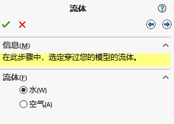入口条件
压力：按流体在此处压力为条件
容积流量比：按每秒进入流体的容积为条件设置。
质量流量比：按每秒进入流体的质量为条件设置。
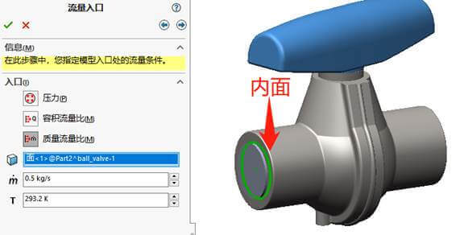出口条件
压力：按流体在此处压力为条件（注意，出口的压力必须小于入口压力，不然进出口就相反了。）
容积流量比：按每秒进入流体的容积为条件设置。

结果
运行结果的过程是自动的，点击图1计算后，等待图2的计算过程。获得图3的观阅结果查看。
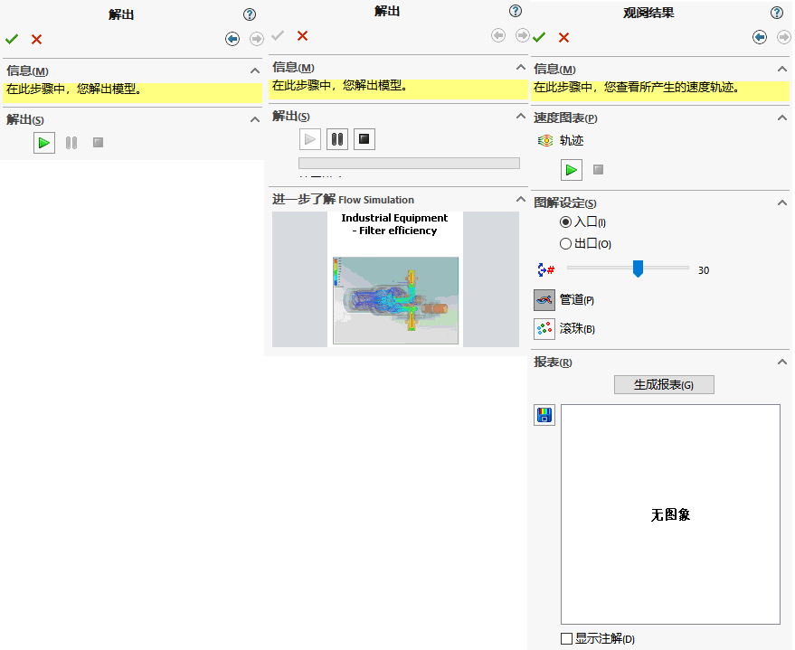观阅结果播放如下：
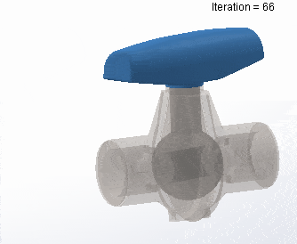Flow Simulation
SOLIDWORKS Flow Simulation 是一个计算流体力学 (CFD) 软件，可用来分析各种液流问题。 它计算的数量是由液流引起的压力分布和温度概貌。 以下显示的球阀装配体内液流已由 SOLIDWORKS Flow Simulation 求解。 SOLIDWORKS Flow Simulation 生成了文件 1.fld。 该文件包含液体在实体零部件产生的压力载荷。
SOLIDWORKS Flow Simulation一款功能强大的计算流体力学 (CFD) 工具，解决方案包括：
计算流体力学 (CFD)：计算流体流动和传热作用力，并研究移动的液体或气体对产品性能的影响
流体分析：
CFD 仿真流体（液体或气体）穿过或绕过物体。分析可能非常复杂 — 例如，一种计算可能包含传热流、混合流、不稳定流和可压缩流。不使用某种仿真工具预测此类流对产品性能的影响可能非常耗时和代价高昂。
热流体分析：
热流体分析支持使用计算流体力学 (CFD) 分析共轭热传导（固体中的热传导、流体和固体之间的对流以及辐射），可以轻松研究冷却和设计变更对零部件温度的影响。您可以快速确定设计内部和周围的流体流动的影响，以确保正确的热性能、产品质量和安全。
打开插件：
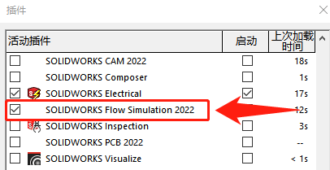工具栏
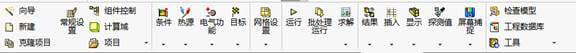模型准备
若你是分析内部流体仿真，你需要先创建一个封闭的空间区域，通过Flow工具栏的【工具-创建封盖】零件获得
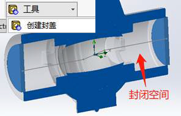向导设置
设置流体仿真的一些条件，其中包括：“项目名称”、“单位”、“分析类型”、“流体介质”、“壁面条件”、“初始条件”等。
项目名称

单位系统
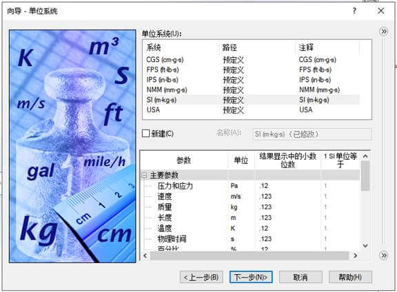分析类型

流体介质

壁面条件

初始条件
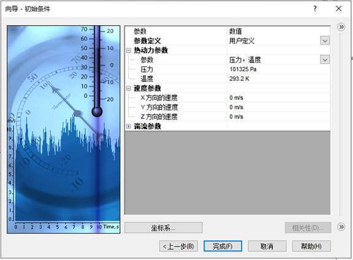输入数据
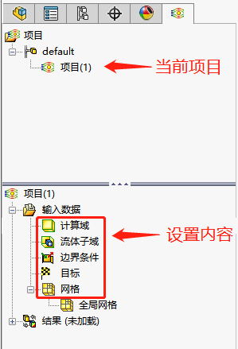计算域：

流体子域
边界条件

入口条件：选择一个内侧的端面作为进口，选择入口速度，设置速度
 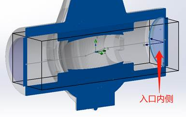
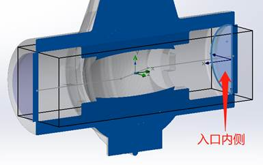
出口条件：选择另一个内侧端面作为出口，出口设置为静压
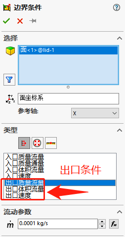
目标
设置需要获得的结果

选择需要分析的参数

网格
 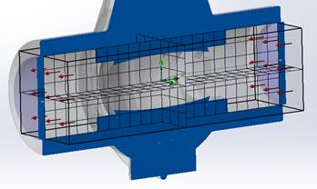
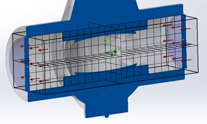
结果
运行
设置好“输入数据”后，启用Flow工具栏【运行】命令
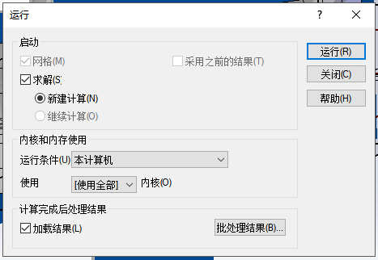运行时你可能会遇到的报警：
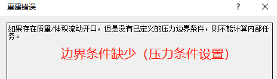结果

HVAC
HVAC 模块空调采暖通风专业分析工具 —— 可提供其他仿真功能以进行高级辐射和热舒适度分析
SOLIDWORKS Flow Simulation 的 HVAC 设计模块可用于评估工作和生活环境中的空气和气体流动。该模块包括高级辐射模型、舒适度指标和大型建筑材料数据库。使用装有 HVAC 应用模块且内嵌 CAD 的 SOLIDWORKS Flow Simulation 轻松分析和优化 HVAC（采暖、通风和空调）系统。您可以在一开始就确保热性能和设计质量 — 并避免以后代价高昂的返工。

Electronics Cooling
Cooling电子冷却模块 — 评估电子元件的热属性和冷却要求
SOLIDWORKS Flow Simulation 的电子冷却模块可用于评估标准零部件的热属性和冷却需求。该模块具有散热效率分析能力 和增强的仿真功能，从而为设计者和工程师提供卓越的工具集以处理电子封装中的棘手难题。
使用内嵌 CAD 的 SOLIDWORKS Flow Simulation 和电子冷却模块确保产品热性能和质量。热管理算例优化热耗散、解决具有印刷电路板 (PCB) 的产品的常见热管理问题，并帮助选择电子设备。